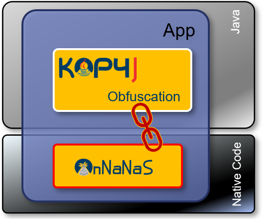
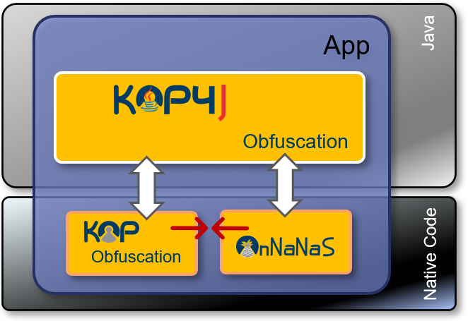

Android Nagra Native Secure Library (AnNaNaS)
General description
The Android application obfuscated by KOP4J, will also include native protections, especially in terms of anti-debug and root detection.
Those native protection are more secure than Java one and are present in AnNaNaS Library (Android Nagra Native Secure lib) which can be a strong complementary protection to KOP4J.

Similar features are present on KOP native. Then if the app project includes native libraries obfuscated by KOP some of those features are already present.
The AnNaNaS lib must be executed to enable the security checks.
What are the threats?
Here we will not consider the static analysis, basically prevented by the obfuscation (code transformation) but more on the code instrumentation threats.
- Root: root right enable the possibility to modify parameter of the OS and do action at system level
- Native Debugger : gives the possibility to add breakpoint on the native code.
- Magisk : is a tool used to root silently an android device
- Frida : is a dynamic instrumentation tool attached as a debugger process at native level.
- Xposed : is a plugging to Magisk able to change system behavior -Emulation
AnNaNaS flavors
There exits different flavors of AnNaNaS libraries
- Release : includes an in-app debugger mechanism which prevents the attachment of other process. This a very powerful protection. As it includes a debugger it is not compliant with an anti-debugger by detection mechanism.
- Release B : version: includes a debugger by detection, less efficient that the in-app debugger, it cannot prevent Frida debuggers
- Integration : doesn't include any anti-debug protection. It could be used to debug the app or if this library will coexist with another native library.
| Native KOP lib Release | Native KOP lib Release B | AnNaNaS lib Release | AnNaNaS lib Release B | AnNaNaS lib Integration | Java Protection | |
|---|---|---|---|---|---|---|
| Root | Yes | Yes | Yes | Yes | Yes | Weak |
| Native debugger | In-App DBG | DBG detection | In-App DBG | DBG detection | No | Weak |
| Magisk | No | No | No | No | No | No |
| Frida | In-App DBG | No | In-App DBG | detection | detection | detection |
| Xposed | No | No | No | No | No | detection |
| Emulation | detection | detection | detection | detection | detection | No |
Can KOP lib and AnNaNaS Coexist?
Basically KOP and AnNaNaS .so files can coexist in the same app if we take care to the flavor used. For sure the sum of both libraries will impact the size of the final package Regarding flavor compatibility the In-app debugger not compliant with any anti-debug mechanism, then can coexist only with an Integration version of the other lib.

| Release | Release B | Integration | |
|---|---|---|---|
| Release | No | No | Yes |
| Release B | No | Yes | Yes |
| Integration | Yes | Yes | Yes |
Security note
Security
Native protection is stronger than protection developed in Java.
But both could be considered
The integration of the library AnNaNaS is not sufficient to ensure the protection.
The library must be executed.
Its AnNANaS execution is done during the environment checks when a hash is computed by the AnNaNaS lib.
Protection Configuration
The AnNaNaS Lib is used by default and executed at each environment check.
Then the library must be present in the project, as described chapter in Android project configuration
This feature can be disabled by defining the "hash" strategy, the way to compute hash of the environment checks with a AnNaNaS native implementation or with a java implementation.
The -kop-hash-strategy controls application of the hash strategy.
Native hash implementation, based on AnNaNaS delivery, is choosen by default.
You need to import this delivery to your project (see run for android readme file).
Available values
Available option values are:
- native: Native hash implementation, based on AnNaNaS delivery.
- java : Java hash implementation : does not need to link any library with your project. Must be used on plain Java projects (not Android).
Examples
-
Use native implementation :
-kop-hash-strategy native -
Use java implementation :
-kop-hash-strategy java